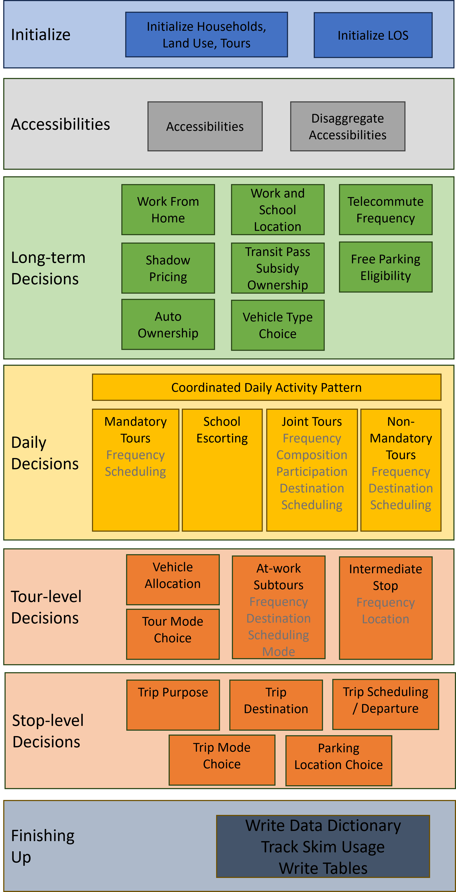

How the System Works#
This page describes how the software works, how multiprocessing works, and the primary example model data schema. The code snippets below may not exactly match the latest version of the software, but they are close enough to illustrate how the system works.
Execution Flow#
An example model run starts by running the steps in example_run. The following flow chart represents steps of ActivitySim, but specific implementations will have different individual model components in their execution.

Initialization#
The first significant step of the run command is:
from activitysim import abm
which loads activitysim.abm.__init__, which calls:
import misc
import tables
import models
which then loads the misc, tables, and models class definitions. Loading activitysim.abm.misc calls:
from activitysim.core import config
from activitysim.core import inject
which loads the config and inject classes. These define Inject injectables (functions) and
helper functions for running models. For example, the Python decorator @inject.injectable overrides the function definition settings to
execute this function whenever the settings object is called by the system. The activitysim.core.inject manages the data
pipeline.
@inject.injectable(cache=True)
def settings():
settings_dict = read_settings_file('settings.yaml', mandatory=True)
return settings_dict
Next, the tables module executes the following import statements in activitysim.abm.tables.__init__ to
define the dynamic inject tables (households, persons, skims, etc.), but does not load them. It also defines the
core dynamic injectables (functions) defined in the classes. The Python decorator @inject.table override the function
definitions so the name of the function becomes the name of the table when dynamically called by the system.
from . import households
from . import persons
#etc...
#then in households.py
@inject.table()
def households(households_sample_size, override_hh_ids, trace_hh_id):
The models module then loads all the sub-models, which are registered as model steps with
the @inject.step() decorator. These steps will eventually be run by the data pipeliner.
from . import accessibility
from . import atwork_subtour_destination
from . import atwork_subtour_frequency
#etc...
#then in accessibility.py
@inject.step()
def compute_accessibility(accessibility, network_los, land_use, trace_od):
Back in the main run command, the next steps are to load the tracing, configuration, setting, and pipeline classes
to get the system management components up and running.
from activitysim.core import tracing
from activitysim.core import config
from activitysim.core import pipeline
The next step in the example is to define the run method, call it if the script is being run as the program entry point, and handle the
arguments passed in via the command line.
def run():
#etc...
if __name__ == '__main__':
run()
Note
For more information on run options, type activitysim run -h on the command line
The first key thing that happens in the run function is resume_after = setting('resume_after', None), which causes the system
to go looking for setting. Earlier we saw that setting was defined as an injectable and so the system gets this object if it
is already in memory, or if not, calls this function which loads the config/settings.yaml file. This is called lazy loading or
on-demand loading. Next, the system loads the models list and starts the pipeline:
pipeline.run(models=setting('models'), resume_after=resume_after)
The activitysim.core.pipeline.run() method loops through the list of models, calls inject.run([step_name]),
and manages the data pipeline. The first disaggregate data processing step (or model) run is initialize_households, defined in
activitysim.abm.models.initialize. The initialize_households step is responsible for requesting reading of the raw
households and persons into memory.
Initialize Households#
The initialize households step/model is run via:
@inject.step()
def initialize_households():
trace_label = 'initialize_households'
model_settings = config.read_model_settings('initialize_households.yaml', mandatory=True)
annotate_tables(model_settings, trace_label)
This step reads the initialize_households.yaml config file, which defines the table_annotation below. Each table
annotation applies the expressions specified in the annotate spec to the relevant table. For example, the persons table
is annotated with the results of the expressions in annotate_persons.csv. If the table is not already in memory, then
inject goes looking for it as explained below.
#initialize_households.yaml
annotate_tables:
- tablename: persons
annotate:
SPEC: annotate_persons
DF: persons
TABLES:
- households
- tablename: households
column_map:
PERSONS: hhsize
workers: num_workers
annotate:
SPEC: annotate_households
DF: households
TABLES:
- persons
- land_use
- tablename: persons
annotate:
SPEC: annotate_persons_after_hh
DF: persons
TABLES:
- households
#initialize.py
def annotate_tables(model_settings, trace_label):
annotate_tables = model_settings.get('annotate_tables', [])
for table_info in annotate_tables:
tablename = table_info['tablename']
df = inject.get_table(tablename).to_frame()
# - annotate
annotate = table_info.get('annotate', None)
if annotate:
logger.info("annotated %s SPEC %s" % (tablename, annotate['SPEC'],))
expressions.assign_columns(
df=df,
model_settings=annotate,
trace_label=trace_label)
# - write table to pipeline
pipeline.replace_table(tablename, df)
Remember that the persons table was previously registered as an injectable table when the persons table class was
imported. Now that the persons table is needed, inject calls this function, which requires the households and
trace_hh_id objects as well. Since households has yet to be loaded, the system run the households inject table operation
as well. The various calls also setup logging, tracing, stable random number management, etc.
#persons in persons.py requires households, trace_hh_id
@inject.table()
def persons(households, trace_hh_id):
df = read_raw_persons(households)
logger.info("loaded persons %s" % (df.shape,))
df.index.name = 'person_id'
# replace table function with dataframe
inject.add_table('persons', df)
pipeline.get_rn_generator().add_channel('persons', df)
if trace_hh_id:
tracing.register_traceable_table('persons', df)
whale.trace_df(df, "raw.persons", warn_if_empty=True)
return df
#households requires households_sample_size, override_hh_ids, trace_hh_id
@inject.table()
def households(households_sample_size, override_hh_ids, trace_hh_id):
df_full = read_input_table("households")
The process continues until all the dependencies are resolved. It is the read_input_table function that
actually reads the input tables from the input HDF5 or CSV file using the input_table_list found in settings.yaml
input_table_list:
- tablename: households
filename: households.csv
index_col: household_id
column_map:
HHID: household_id
Running Model Components#
The next steps include running the model components specific to the individual implementation that you are running and as specified in the settings.yaml file.
Finishing Up#
The last models to be run by the data pipeline are:
write_data_dictionary, which writes the table_name, number of rows, number of columns, and number of bytes for each checkpointed tabletrack_skim_usage, which tracks skim data memory usagewrite_tables, which writes pipeline tables as CSV files as specified by the output_tables setting
Back in the main run command, the final steps are to:
close the data pipeline (and attached HDF5 file)
Components#
Individual models and components are defined and described in the Developers Guide. Please refer to the Components section.